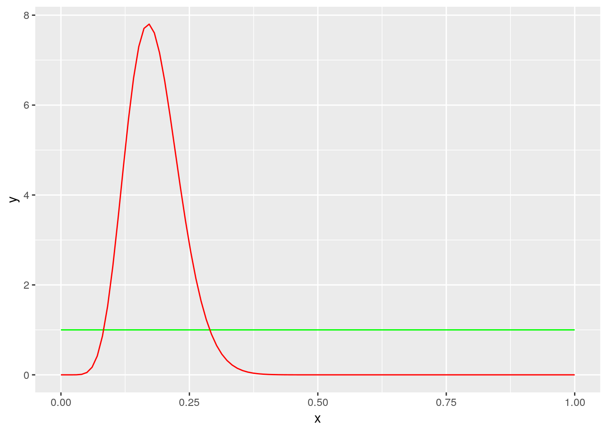

Les slides sont disponibles
Cours Partie1 Cours Partie2
Pour les manipulations, nous aurons besoin de OpenBugs disponible ici.
Sous linux, il faut installer wine puis OpenBugs sous wine.
On va utliser également Jags disponible sous Linux et Windows et le package rjags.
Un petit rappel sur les lois de probabilité utiles pour la modélisation bayésienne est disponible sur la page Rappel
While monitoring a large population of size \(n\) unknown, \(m\) individuals have been marked and released. The population might be considered as \(m\) marked individuals and \(n-m\) unmarked individuals. A recapture experiment leads to \(YM\) marked animals and \(YNM\) unmarked. What is the size of the population.
The capture mark recapture experiment has been used for the first time on these conditions. Few is known on the probability of capture. Therefore an uniform prior is chosen to model the a priori knowledge on \(p\).
m <- 53
YM <- 9Because the uniform distribution is a special case of beta distribution, the full bayesian specification for the model is a so called beta binomial model which has analytical posterior distribution.
\[\pi(p\vert YM_{obs}) \sim \mathcal{B}eta(YM + 1, m-YM +1)\]
s1 <- 1
s2 <- 1
p <- ggplot(data = data.frame(x=seq(0,1, length.out = 100)))
stat_post <- stat_function(aes(x = x, y = ..y..), fun = dbeta, colour="red", n = 100,
args = list(shape1 = YM+s1, shape2 = m-YM+s2))
stat_prior <- stat_function(aes(x = x, y = ..y..), fun = dbeta, colour="green", n = 100,
args = list(shape1 = s1, shape2 = s2))
p + stat_prior +stat_post
binom_loglikelihood<- function(y, p, m){
dbinom(x = y, size=m, prob = p)
}
binom_loglikelihood(y=YM, p=0.1, m=m)## [1] 0.04297662binom_loglikelihood(y=YM, p=0.2, m=m)## [1] 0.1235354rprop <- function(p.courant, sd.explore=0.1){
p.courant + sd.explore*rnorm(1)
}
dprop <- function(p.courant, p.propose, sd.explore=0.1){
dnorm(p.courant-p.propose, sd=sd.explore)
}ratio <- function(p.courant, p.propose, sd.explore){
if(p.propose>1 || p.propose <0 ){
rat <- 0
} else
{
rat <- (binom_loglikelihood(YM, p.propose, m=m) * dbeta(p.propose, s1, s2)) / (binom_loglikelihood(YM, p.courant, m=m) * dbeta(p.courant, s1, s2))*(dprop(p.propose, p.courant, sd.explore) / dprop(p.courant, p.propose, sd.explore))
}
return(rat)
}p.init <- 0.8
n.iter <- 500
sd.tune <- 0.1
p.post <- rep(NA, n.iter)
p.courant <- p.init
for (i in 1 : n.iter){
p.cand <- rprop(p.courant, sd.explore = sd.tune)
rat <- ratio(p.courant, p.cand, sd.tune)
if(runif(1)<rat){
p.post[i] <- p.courant <- p.cand
} else {
p.post[i] <- p.courant
}
}
df.post <- data.frame(p.post=p.post, niter=1:n.iter)
p <- ggplot(data = df.post, aes(x=niter, y=p.post)) + geom_point()
pp <- ggplot(data = df.post, aes(x=p.post)) + geom_histogram(aes(y=..density..)) + xlim(c(0,1)) +stat_function(aes(x = p.post, y = ..y..), fun = dbeta, colour="green", n = 100,
args = list(shape1 = s1, shape2 = s2)) + stat_function(aes(x = p.post, y = ..y..), fun = dbeta, colour="red", n = 100,
args = list(shape1 = YM+s1, shape2 = m-YM+s2))
p## `stat_bin()` using `bins = 30`. Pick better value with `binwidth`.La méthode d’inventaire de DeLury (DeLury,1947) consiste à effectuer un certain nombre de pêches successives pour évaluer la taille d’une population inconnue \(\nu\) à l’aide d’un dispositif de capture (le plus souvent pêche électrique) d’efficacité \(\pi\) . L’efficacité \(\pi\) est la probabilité de capture d’un individu: elle dépend du milieu et de l’effort de pêche, et peut dépendre de la taille de l’individu. Les poissons capturés à chaque pêche ne sont ni marqués, ni remis à l’eau.
On appelle \(m\) ce nombre de pêches successives et \(C_{1}, C_{2}, \ldots, C_{i},\ldots,C_{m}\) les quantités capturées successivement obtenues.
On pourra prendre \(\nu=50\) et \(\pi=\frac{1}{4}\) pour fixer les idées.
Montrer qu’une loi béta de paramètres \(a=1,\) \(b=3\) est une loi a priori très acceptable pour encoder le jugement d’un expert en dispositif de pêche électrique annonçant que sa meilleure évaluation personnelle pour \(\pi\) est de l’ordre de \(\frac{1}{4}\) \(\ \) et qu’il est prêt à parier \(50\%/50\%\) environ sur l’intervalle \([0.1,0.4].\)
| Espèces | Peche1 | Peche2 | Peche3 |
|---|---|---|---|
| Anguilles | 28 | 11 | 4 |
| Vairons | 60 | 54 | 58 |
L’objectif du TD est d’estimer al aille d’une population d’otaries sur l’ile Marion en Antarctique.
Un extrait de la publication présentant les données et le problème est disponible ici.
Nous nous appuierons sur 3 jeux de données qui sont * les expériences de capture marquage recapture CMR_Data * les comptages directs DC_Data * Les comptages depuis la falaise Cliff_data